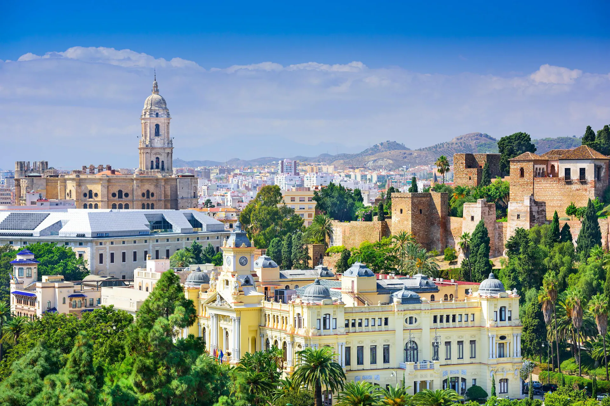
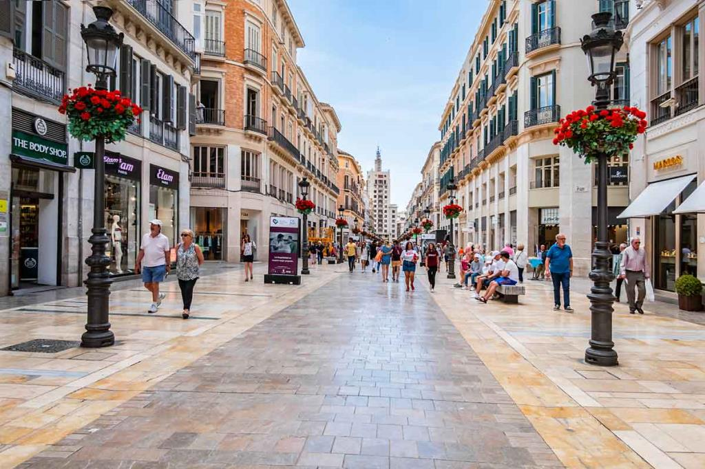
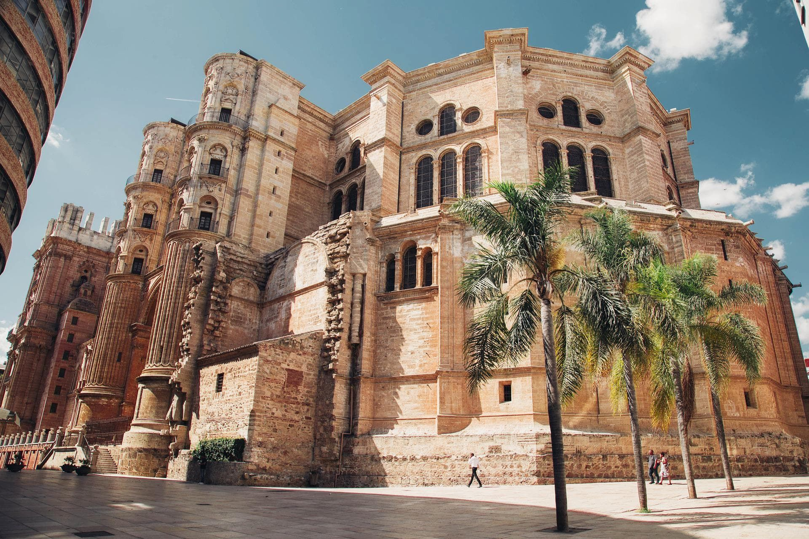
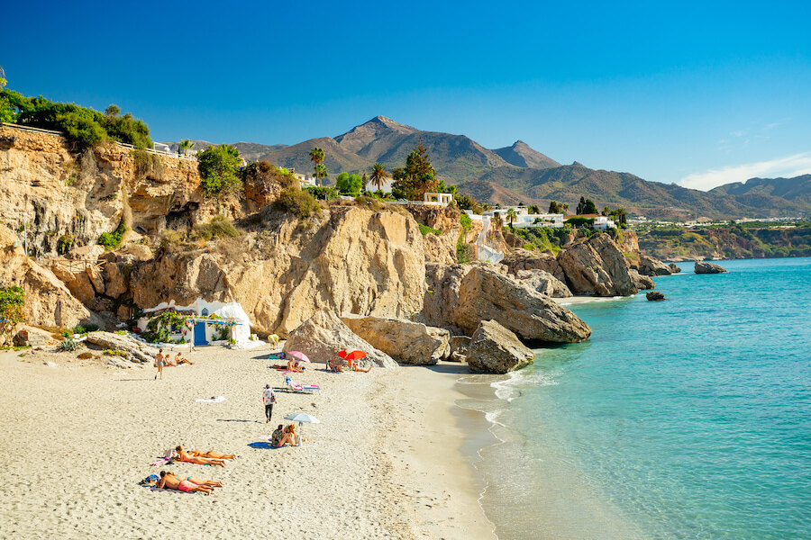
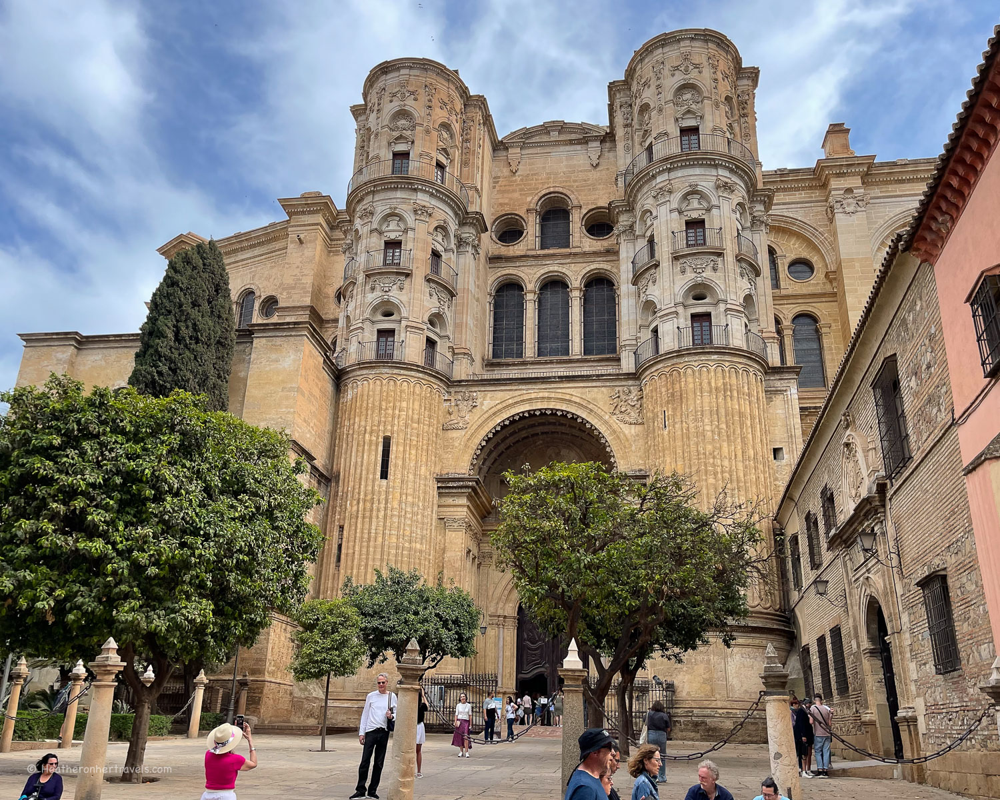
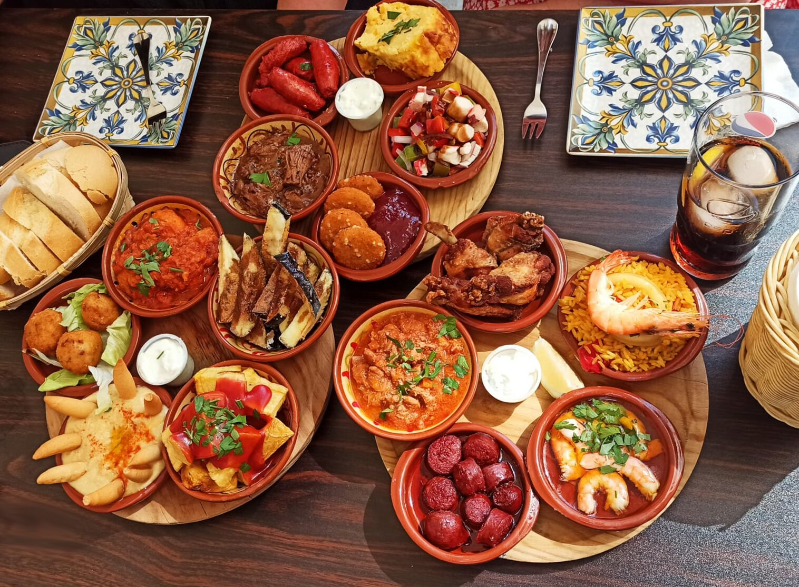

Málaga is a sunny city on the Costa del Sol, in southern Spain, and one of the oldest cities in Europe. With more than 300 days of sunshine a year, it is a perfect destination for travelers who love the sea, history and good food.
The city is full of history. You can climb to the Alcazaba, a Moorish fortress from the 11th century, and visit the Roman Theatre at its foot. Above the city stands the Gibralfaro Castle, which offers some of the best views over the port and the Mediterranean. Málaga is also the birthplace of Pablo Picasso, and the Picasso Museum is one of the most popular places to visit.
Málaga is also a city of beaches and flavors. La Malagueta and Pedregalejo are perfect for relaxing by the sea, while the old town is full of narrow streets, tapas bars and lively squares. Do not miss the fresh fish, the espetos de sardinas grilled on the beach, and a glass of sweet Málaga wine.



Over 300 days of sun a year and a coastline that’s easy to reach from the city centre. Spend the morning at La Malagueta, right next to the port, then walk east to Pedregalejo, where small fishing-village streets lead to beachfront restaurants serving grilled fish. Rent a sunbed, swim, and stay for the sunset over the Mediterranean. It’s a beach day that doesn’t require a car or a long trip.Check out the beaches for yourself, just click on the image.

Roman theatre, Moorish fortress and the museum of Picasso, who was born here, all within walking distance of each other. Start at the Alcazaba, continue up to Gibralfaro Castle for views over the port and the bullring, then head back down through the old town to the Picasso Museum. Málaga packs nearly 3,000 years of history into a city you can explore on foot in a single day. Interested in this subject? Click on the image and learn more

Sardines grilled over open fire on the beach, tapas in the old town, and a market full of local produce. Start the morning at the Atarazanas Market, have lunch at a chiringuito by the sea, and spend the evening moving between tapas bars in the center. Finish with a glass of sweet Málaga wine, the local specialty. In Málaga, eating well is part of the daily routine. Don’t know where to eat? Click on the image and find the best places to try local food.
Most of the city centre is walkable, and the airport is connected to the centre by train (about 12 minutes) and by bus. For Pedregalejo and El Palo, take bus line 11 or just walk along the seafront.
Spring and autumn offer mild weather and fewer crowds. July and August are hot and busy, but ideal if the beach is your main goal. Winters are mild, with many sunny days.
Lunch is usually between 2 and 4 PM, and dinner starts after 8:30 PM. Many kitchens close in the afternoon, so plan around it. Tapas bars are the easiest way to try several local dishes without spending much.
Bring sandals, as some beaches are pebbly. Chiringuitos accept cards in most cases, but keep some cash for smaller places. Sunbed rental is usually a few euros per day.
Book the Alcazaba and Picasso Museum online to skip the queue. Many museums are free on certain evenings, so check the schedule before you go. Gibralfaro is a steep walk, so wear comfortable shoes.
Málaga is generally safe, but as in any busy tourist area, keep an eye on your belongings in crowded places. Tap water is safe to drink.